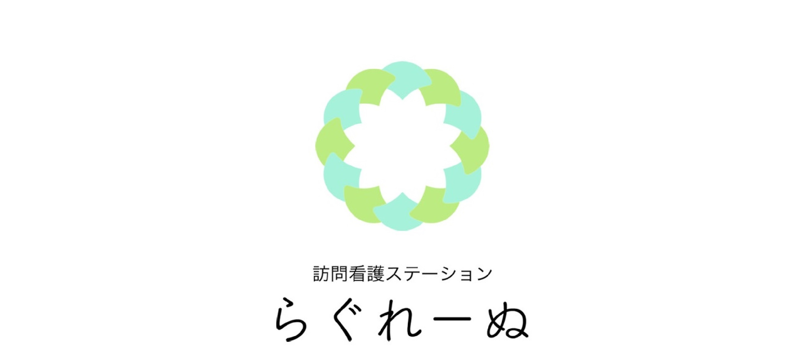
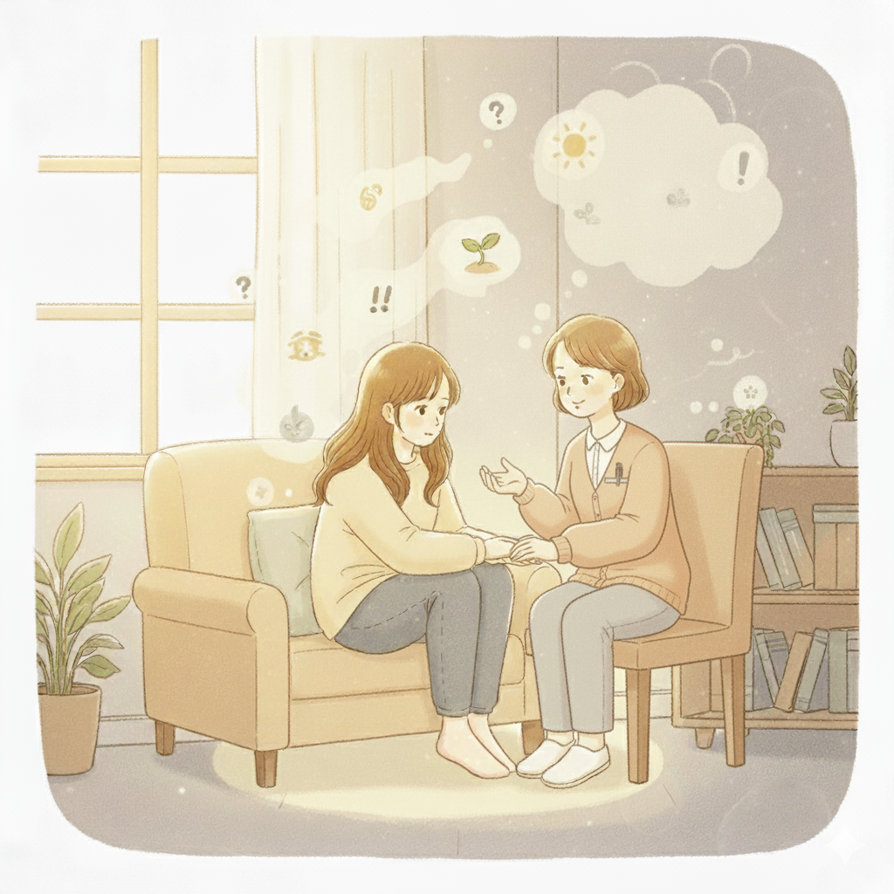
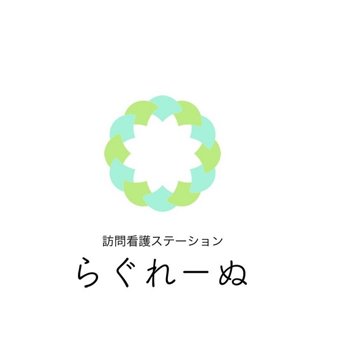
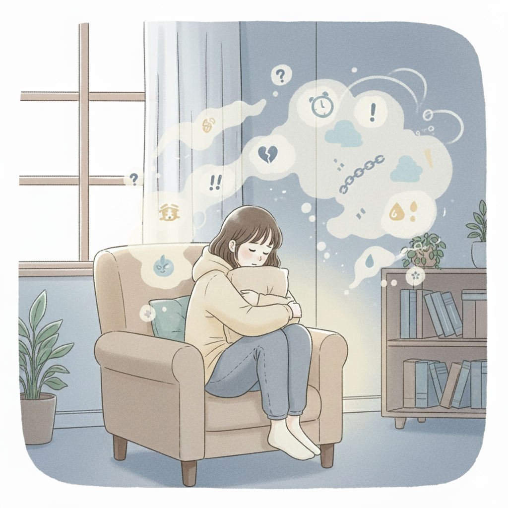
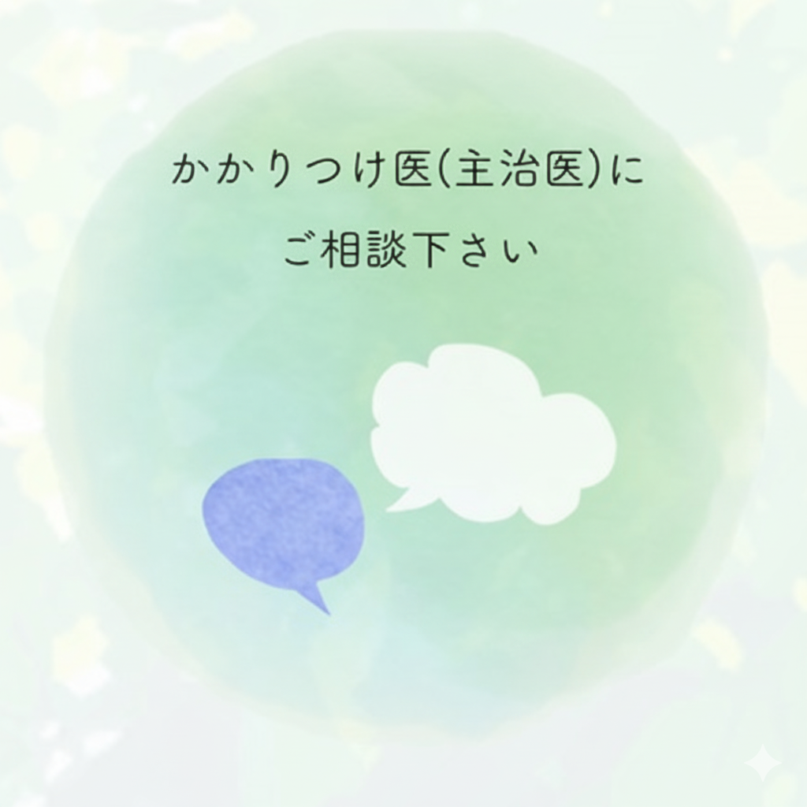
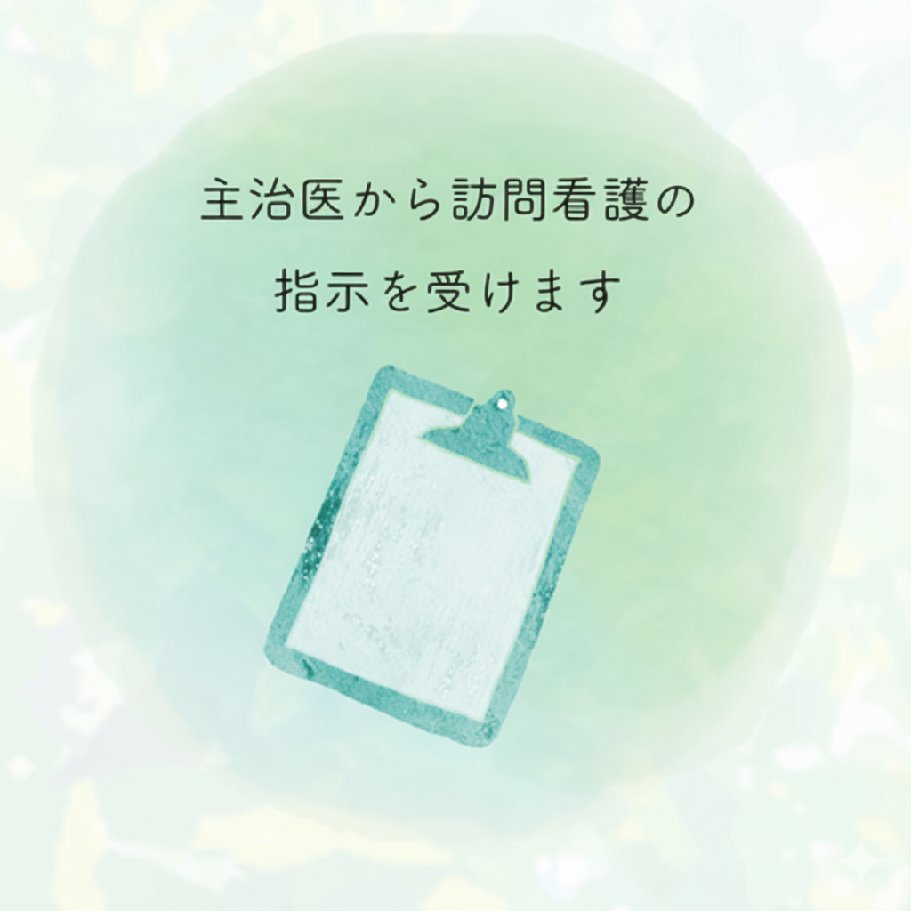
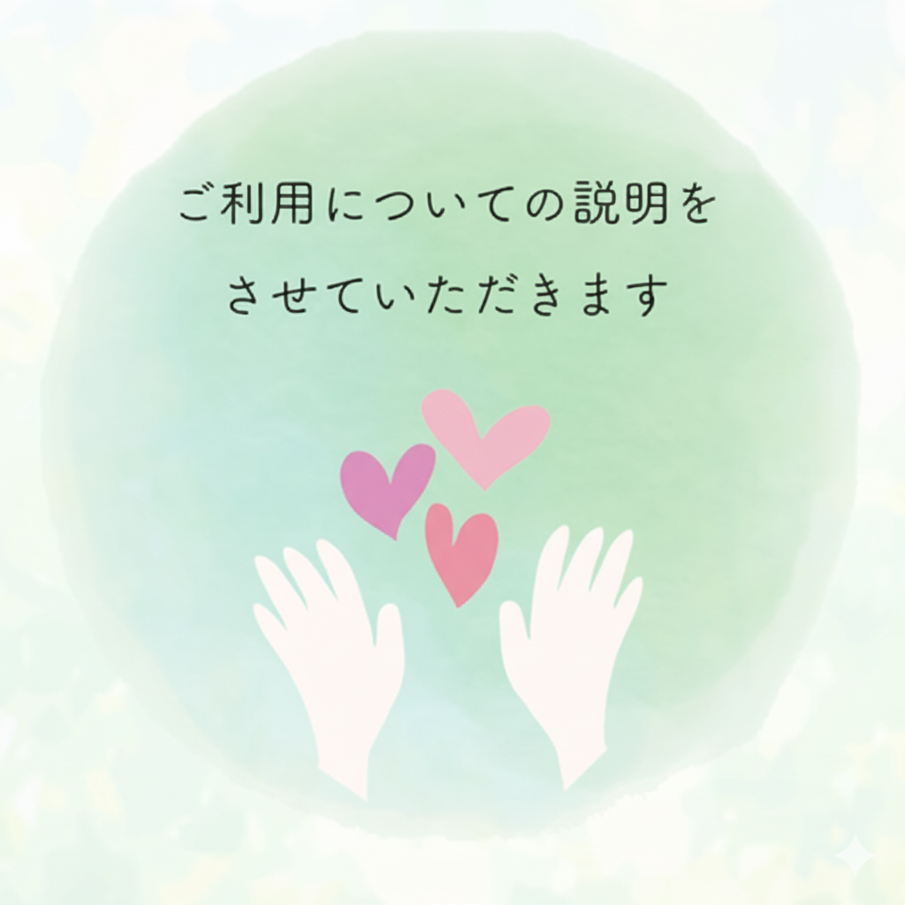
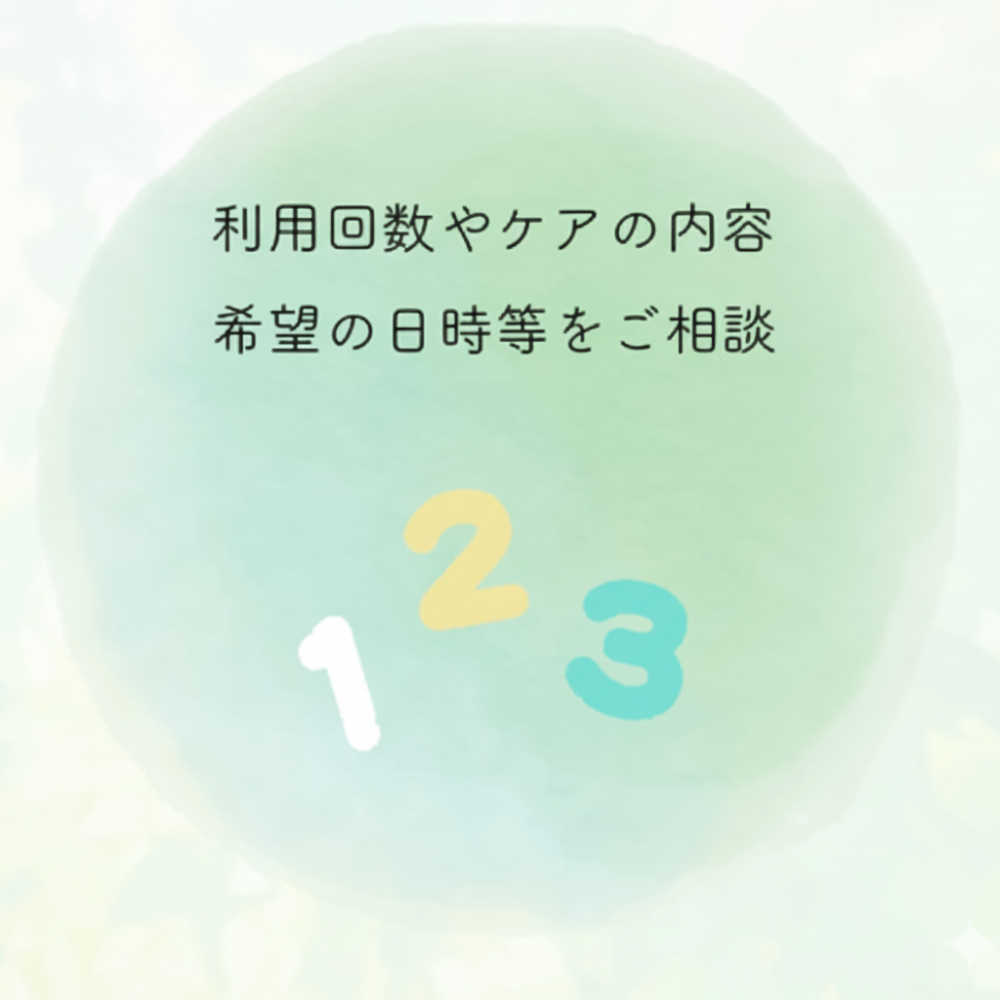
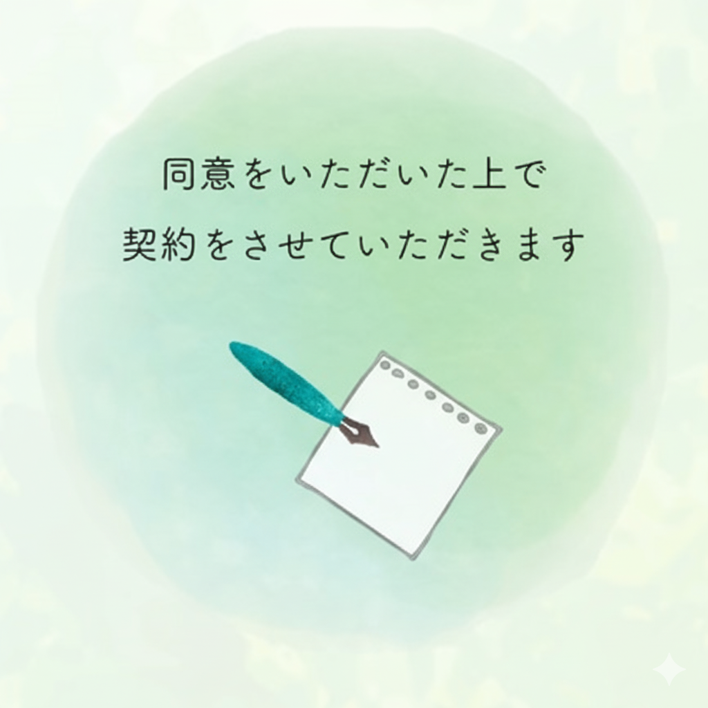
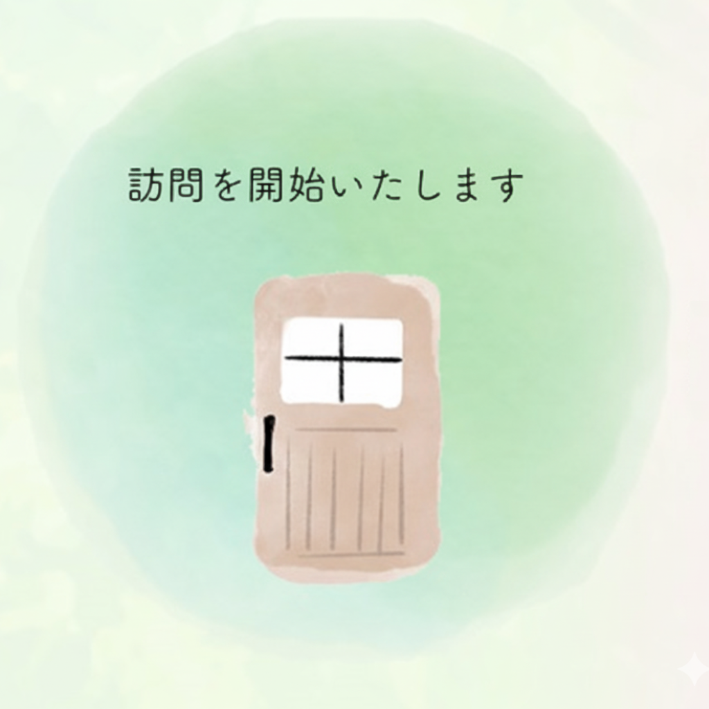

その力を信じ、見守り、支え、
ともに成長していきたいと考えています。


精神科訪問看護とは、精神疾患や心の不調を抱えながら地域で生活する方のご自宅に、看護師・作業療法士などの専門スタッフが訪問してケアを行うサービスです。
医療保険（または自立支援医療）が使えるため、費用面でも安心してご利用いただけます。主治医の訪問看護指示書をもとにサービスを開始します。

精神科訪問看護は、こころの不調を抱えながら地域で生活する方々を専門スタッフがご自宅でサポートするサービスです。
主治医からの訪問看護指示書をもとに個別のサービス計画を作成し、ご提供します。
身体やこころの症状の観察と対応、お薬の管理・副作用の観察、主治医への連絡や相談。
食事・睡眠・排泄・清潔保持、人との付き合い、余暇活動など生活全般にわたる援助。
仕事・学校・家族関係・近所付き合いに関する相談や関係機関の情報提供。
外出支援、家事・買い物の支援、受診同行、行政手続きのサポートなど幅広く対応。
まずはかかりつけ医にご相談ください。訪問看護指示書をもとに、個別のサービス計画を立てます。






医療保険を利用することができます。精神科訪問看護については自立支援医療を使うこともできます。詳しくはお気軽にご相談ください。
京都市（京北地域を除く）・向日市・長岡京市を訪問範囲としています。
ご利用者さんに合わせて担当スタッフ制をとっておりますので、毎回同じスタッフが訪問します。安心してご利用ください。
はい。ご家族が感じておられる不安や気がかりなどについての援助・相談にも応じます。どうぞお気軽にご連絡ください。
ご不明な点がございましたら、まずはお気軽にご相談ください。スタッフ一同、心よりお待ちしております。
| 法人名 | 認定NPO法人SEEDきょうと |
|---|---|
| 事業所名 | 訪問看護ステーション らぐれーぬ |
| 住所 | 〒600-8269 京都市下京区七条通猪熊東入 西八百屋町136番地 ランドビル2階 |
| 電話 | 075-754-8832 |
| FAX | 075-320-5122 |
| 訪問地域 | 京都市（京北地域を除く）・向日市・長岡京市 |
| 業務内容 | 精神科訪問看護 |